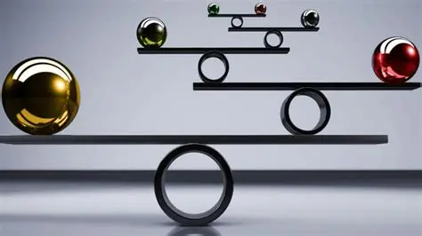
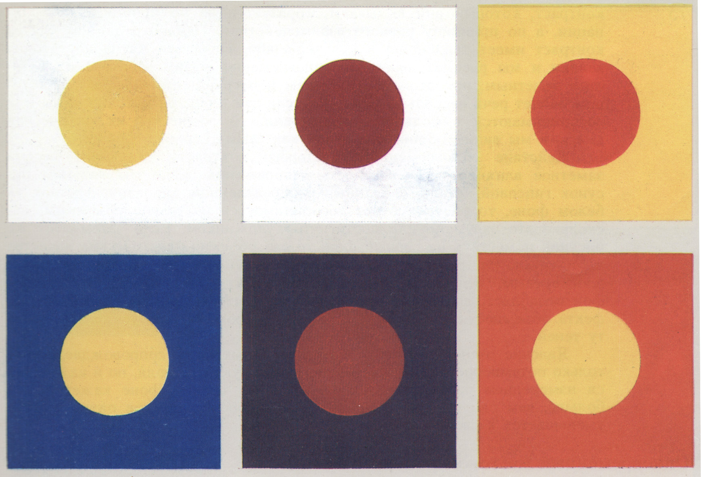
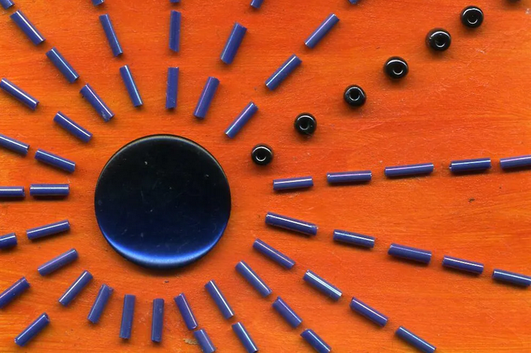
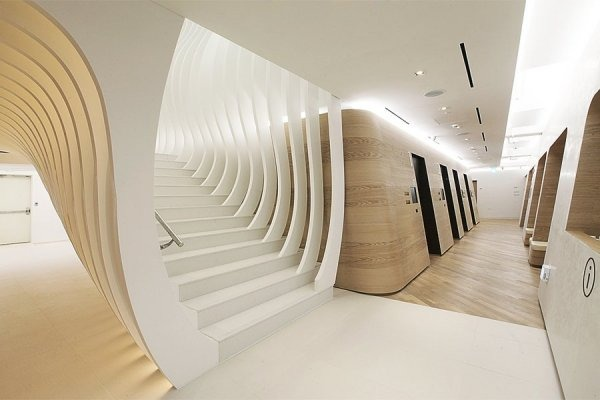
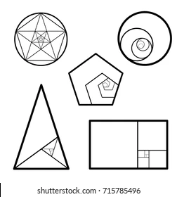
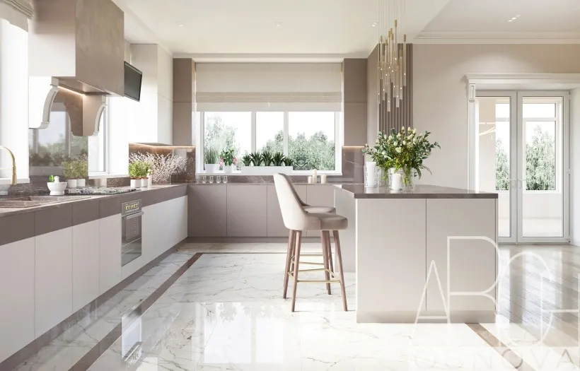

Основные принципы дизайна
Дизайн - это не просто эстетика, это система принципов, которые помогают создавать эффективные и привлекательные композиции. Рассмотрим ключевые принципы, которые используют профессиональные дизайнеры.
1. Баланс
Баланс создает ощущение стабильности в композиции. Существует три основных типа баланса:
- Симметричный - элементы зеркально отражаются относительно центра
- Асимметричный - баланс достигается за счет контраста разных по весу элементов
- Радиальный - элементы расходятся из центра как лучи
Пример: В логотипе Apple используется симметричный баланс, а в плакатах Swiss Style - асимметричный.
2. Контраст
Контраст создает визуальный интерес и помогает выделить важные элементы:
Может достигаться через:
- Цвет (черный/белый, теплый/холодный)
- Размер (большой/маленький)
- Форму (геометрическая/органическая)
- Текстуру (гладкая/шероховатая)
Пример: Черно-белая типографика в плакатах Bauhaus демонстрирует сильный контраст.
3. Акцент
Акцент помогает направить внимание зрителя на ключевые элементы:
Способы создания акцента:
-
Цветом - яркий цвет на нейтральном фоне
- Пример: Красная кнопка "Купить"
-
Размером - увеличенный элемент
- Пример: Заголовок статьи
-
Формой - необычная форма среди стандартных
- Пример: Логотип Nike Swoosh
4. Ритм и повторение
Ритм создает движение и единство в композиции:
Типы ритма:
- Регулярный - одинаковые интервалы (как плитка)
- Прогрессирующий - постепенное изменение
- Случайный - хаотичное, но продуманное расположение
Пример: Упаковка товаров часто использует повторяющиеся паттерны.
5. Пропорция и масштаб
Правильные пропорции создают гармоничные отношения между элементами:
Важные аспекты:
- Золотое сечение (1:1.618)
- Иерархия размеров
- Соотношение фигуры и фона
Пример: Логотип Twitter использует золотую спираль в пропорциях птицы.
6. Единство и гармония
Создает ощущение целостности дизайна:
Достигается через:
- Единую цветовую палитру
- Схожие формы и линии
- Согласованные интервалы
- Повторяющиеся элементы
Пример: Айдентика бренда Apple демонстрирует единство во всех продуктах.